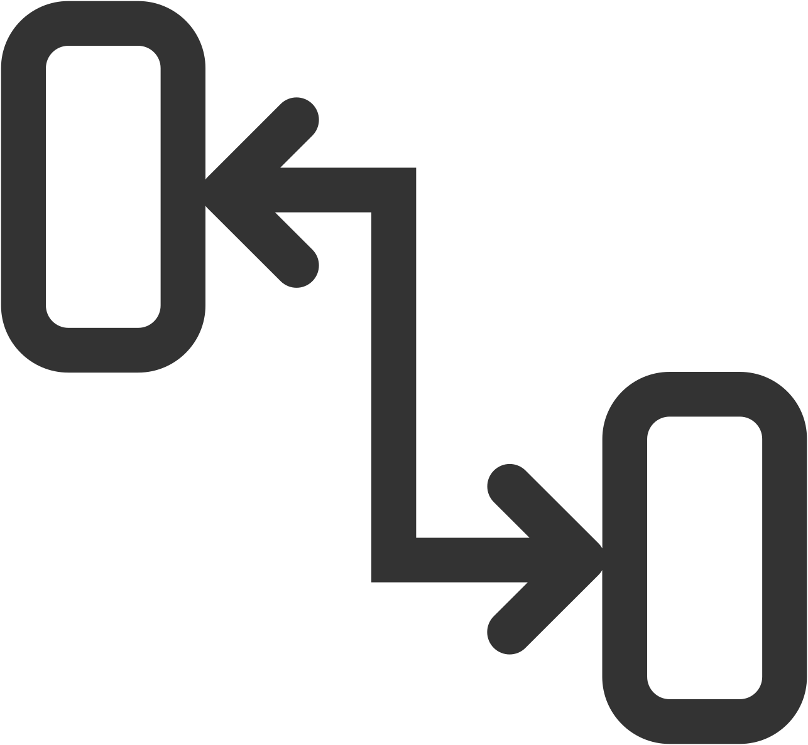
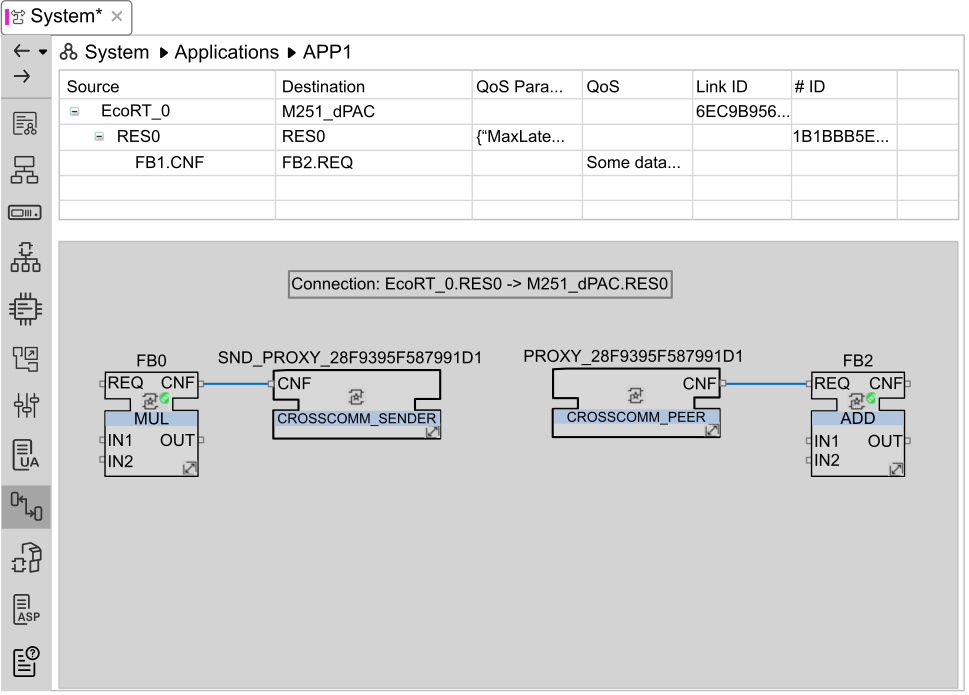

The Communication Network editor shows cross-communication links between resources in an application with components distributed across at least two devices.
To use the Communication Network editor, you must first enable it by selecting Advanced for the User Level parameter in the Backstage ().
If the application level is selected, the Communication Network editor shows all cross-communication connections. If the resource level is selected, only connections for the device associated with the selected resource are shown.
Before displaying information in the Communication Network editor, you must:
Define at least 2 logical devices in the application.
Use the Application editor to map function blocks to the logical devices on which they are to be deployed.
Where cross-communication between devices is required, connect the corresponding function block input and output events and data.
To display the Communication Network editor:
Open the System editor.
Click the Communication Network icon

from the vertical toolbar on the left.The Communication Network editor consists of two areas:

The upper area of the Communication Network Editor shows cross-communication connections between resources in an application with components distributed across at least two devices.
The following information is displayed for each connection:
| Column | Description |
|
Source |
The device that is the source of the connection. Expand this item to display the resource name and function block event and data outputs that are connected to the remote device. |
|
Destination |
The device that is the destination of the connection. Expand this item to display the resource name and function block event and data inputs that are connected to the local device. |
|
QoS Parameters |
The Quality of Service (QoS) parameters applied to this connection. The default values are defined in the Communication tab of the Options for this solution. Click on the current setting then the browse button that appears to display the current QoS parameter values. Enter values for Max latency and Packet rate, then click OK to apply the values on this connection. |
|
QoS |
The current QoS setting for this connection. Click on the current setting then the down arrow button that appears to change the QoS setting:
(Default) is prefixed to indicate the default value defined in the Communication tab of the Options for this solution. |
|
Link ID |
Unique identifier of the connection. |
|
ID |
Unique identifier of the resource. |
The lower area of the Communication Network editor is the cross-communication network view, showing the function blocks mapped to the source or destination devices of each connection.
The following system function blocks are automatically inserted as required:
COMM_CHANN_DESC. Defines a communication link between any two resources that have at least one pair of communicating function blocks, or that implement an endpoint for an anonymous peer.
CROSSCOMM_SENDER. The sending resource proxy. Takes the output events and data of a function block and transports them to the receiving resource.
CROSSCOM_PEER. The receiving resource proxy. Contains input events and data matching those of the sending resource proxy.
COMM_ADAPTER_SOCKET_PROXY. The socket proxy for an adapter.
COMM_ADAPTER_PLUG_PROXY. The plug proxy for an adapter.
The function blocks in this area can be watched (see Watch) once the application has been deployed to obtain detailed information about the communication.